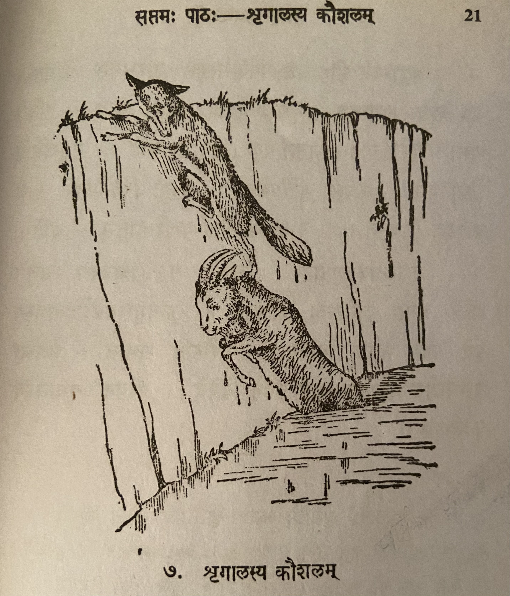

Lesson 7: श्रृगालस्य कौशलम्

चित्रेऽस्मिन् एकः श्रृगालोऽजस्य पृष्ठे पदं निधाय तिष्ठति। कथय, किं निमित्तं, स तथा तिष्ठति?
अयं श्रृगालः पानीयां पातुं वापीं गतो जले ममज्ज। तेन बहिर्गन्तुं बहवो यत्नाः कृताः। किन्तु ते सर्वे मुधाऽभवन्॥
अत्रान्तरे कोऽप्यजः1 पिपासाकुलः परिभ्रमन् तत्रागतः। अपृच्छच्च श्रृगालम् - ’सखे अपि मधुरं जलम्’ - इति। श्रृगालः परेषां वञ्चने नितरां पटुः। अतः स आह - ’मधुरमित किमुच्यते! केवलं पीयूषमेव! प्रभूतं पिबतोऽपि न मे वाञ्छा निवर्तते॥ नशक्नोम्येतां2 वापीं हातुम्’ - इति॥
अजस्तावदृजुबुद्धिः3। अतः स वञ्चकस्य वचनं सत्यं मत्वा शनैरन्तः4 प्रविशति। ऊर्ध्वमुखमवरोहतस्तस्य5 पृष्ठे पदं निधाय वापीतः समारोहति श्रृगालः। अजस्तु6 वाप्यामेव7 मञ्जनोन्मञ्जने कुर्वन् विपेदे। पश्यत! श्रृगालस्य कौशलम्॥
उपदेशः - वञ्चकस्य वचनं न विश्वसनीयम्। तस्योपकारोऽपि8 न कर्तव्यः॥
1कः अपि अजः -> (visarga preceded by अ + अ) कोऽपि अजः -> (इ/ई + vowel) कोऽप्यजः
2न शक्नोमि एताम्
3अजः तावत् ऋजुबुद्धिः -> (ः + त = स्त) अजस्तावत् ऋजुबुद्धिः -> (त् + vowel = द्) अजस्तावतदृजुबुद्धिः
4Visarga (ः ) preceded by a vowel other than अ or आ and followed by a vowel or voiced consonant changes to र्. शनैः अन्तः -> शनैरन्तः
5ऊर्ध्वमुखमवरोहतः तस्य -> ऊर्ध्वमुखमवरोहतस्तस्य
6अजः तु -> अजस्तु
7वाप्याम् एव -> वाप्यामेव वापी is स्त्रीलिङ शब्द line नदी. वाप्याम् is द्वितीया विभक्ति एक वचन.
8 तस्य उपकारः अपि -> तस्योपकारोऽपि (अ + उ = ओ)
Translation
Title: The Jackal's Cleverness
In this (अस्मिन्) picture (चित्रे) one (एकः) jackal (श्रृगालः), having placed (निधाय) a foot (पदं) on a goat's (अजस्य) back (पृष्ठे ), is standing (तिष्ठति). Say what (किं) reason (निमित्तं) is he (सः) standing (तिष्ठति) such (तथा).
This (अयं) jackal (श्रृगालः) went (गतः) to the well (वापीं) to drink (पातुं) water (पानीयां) (and) was immersed in (ममज्ज) the water (जले) (i.e. fell in). A lot of (बहवः) effort (यत्नाः) was done (कृताः) by him (तेन) to get out (बहिर्गन्तुं). But (किन्तु) they (ते) all (सर्वे) were (अभवन्) in vain (मुधा).
In the meantime (अत्रान्तरे) some (कः अपि) wandering (परिभ्रमन्) goat (अजः)1 afflicted by thirst (पिपासाकुलः) came there (तत्रागतः). (He) asked (अपृच्छच्च) the jackal (श्रृगालम्) thus (इति) - "Friend (सखे) is (अपि) the water (जलम्) sweet (मधुरं)". The jackal (श्रृगालः) is very much (नितरां) skilled in (पटुः) deceiving (वञ्चने) others (परेषां). So he said - "What can I say (किमुच्यते) (about) how sweet (मधुरम्) it is (इति)? Only (केवलम्) (like) nectar (पियूषम्) really (एव)! Even (अपि) drinking (पिबतः) a lot (प्रभूतं) my (मम्) desire (वाञ्छा) does not cease (निवर्तते). (I) am not (न) able to (शक्नोमि) leave (हातुम्) this (एताम्) well (वापीं)."
Goat (अजः) is so very (तावत्) straightforward (ऋजुबुद्धिः). So (अतः) he (सः) thinking (मत्वा ) the cheater's (वञ्चकस्य) words (वचनं) are true (सत्यं) slowly (शनैः) entered (प्रविशति) inside (अन्तः) (the well). As he descended with face upwards (ऊर्ध्वमुखमवरोहतः) (the goat descended walking backwards) placing (निधाय) a leg (पदं) on his back (पृष्ठे) the jackal (श्रृगालः) climbed out (समारोहति) from the well (वापीतः). But (तु) the goat (अजः) is in trouble (विपेदे) bobbing up and down (मञ्जनोन्मञ्जने कुर्वन्) in the well (वाप्याम्) only (एव). See (पश्यत) the jackal's (श्रृगालस्य) cleverness (कौशलम्).
Teaching/moral (उपदेशः) - Cheater's (वञ्चकस्य) words (वचनं) are not (न) credible (विश्वसनीयम्). Do not (न) do (कर्तव्यः) any help (उपकारः) also (अपि) to them (तस्य).
Vocabulary
| Word | Meaning | Word | Meaning |
|---|---|---|---|
| पानीय n | water | ऋजुबुद्धि a. m. | straightforward |
| वापि f | well, small water body | वञ्चक m | deceitful, also jackal |
| मुधा in | in vain | शनैः in | slowly |
| अत्रान्तरे in | in the meanwhile | वापीतः in | from the well |
| पिपासाकुल a. m. | afflicted by thirst | मज्जनोन्मज्जने n | sinking and coming up |
| पटु a m | clever | नितराम् in | very much |
| वाञ्छा f | desire | कौशलम् n | cleverness |
| हातुम in | to leave | ममज्ज | sank/immersed |